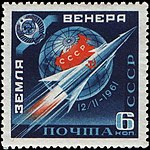

O planeta Vênus é o segundo planeta mais próximo do Sol do Sistema Solar, sendo, além da Lua, o astro mais brilhante no céu.
A gravidade do planeta Vênus é de, aproximadamente, 8,87 m/s².
Vênus não tem satélites naturais. Isso se deve ao fato do planeta possuir uma rotação retrógrada, ou seja, seu movimento de rotação é contrário ao da maioria dos outros corpos celestes.
Vênus tem 12.104 km de diâmetro, com raio de 6.052 km.
Ao menos cerca de 97% da composição atmosférica consiste em gás carbônico. Coexistem 3% de nitrogênio e pequenas partes de dióxido de enxofre, vapor d'água, monóxido de carbono, argônio, hélio, neônio, cloreto de hidrogênio e fluoreto de hidrogênio.
Vênus foi o primeiro dos planetas a ser visitado por uma sonda espacial.
Como exemplar da exploração espacial no planeta, tem-se o Projeto Venera, da União Soviética, que se extendeu de 1961 a 1983 e consistiu em uma série de sondas enviadas ao planeta com objetivo de coletar informações acerca deste.
Hoje, Vênus conta somente com a companhia da sonda Akatsuki, lançada pelo Japão em 2010. A sonda apresentou perda de contato com a Terra no ano de 2024.